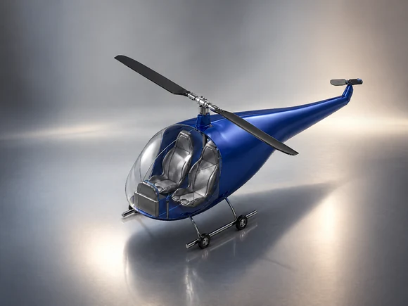
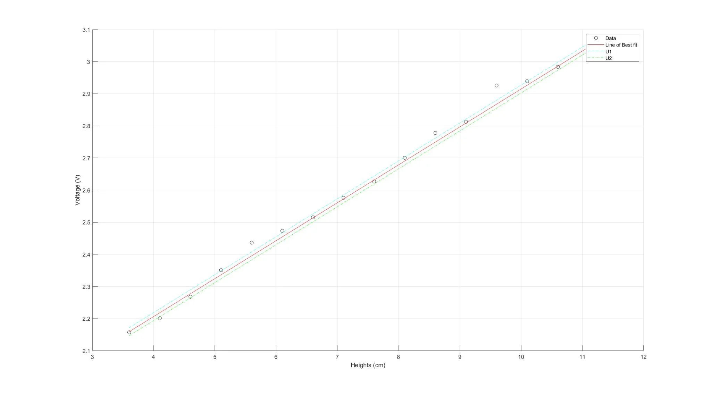
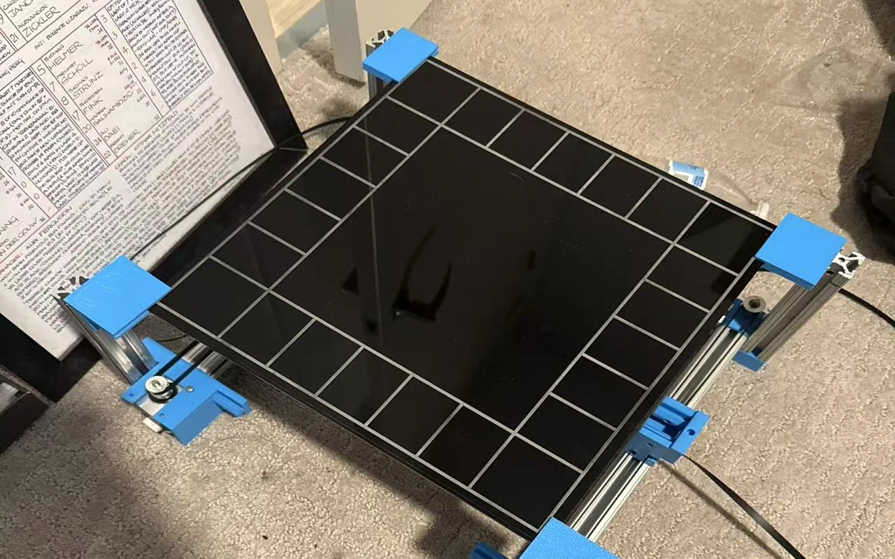
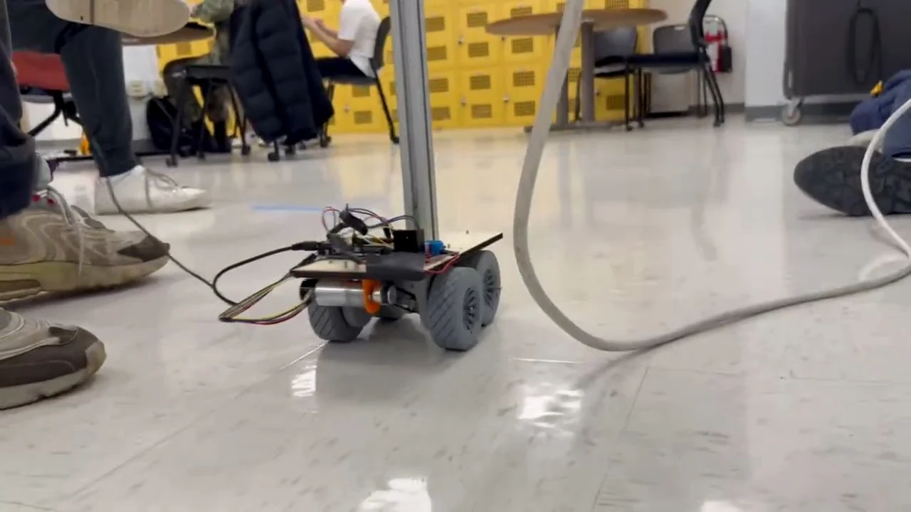

01 // PROTOTYPE BUILD
ENTRY-LEVEL MECHANICAL ENGINEER / RECENT GRADUATE
Engineering ideas into testable systems.
I am Zonghao (Johnny) Li, a Boston University mechanical engineering graduate showcasing academic projects in design, analysis, prototyping, and system performance.
02 // MOTION & CONTROL
Motor-Driven Testing
Arduino-based unstable-load transporter03 // CAD & DESIGN
Aircraft Concepts
VTOL packaging / fighter configuration04 // EXPERIMENTATION
Sensor Calibration
DAQ measurement / dynamic response analysisACADEMIC WORK // SELECTED
Engineering Projects
Documented design and laboratory projects from my mechanical engineering coursework.

BOSTON UNIVERSITY / ME 460/461 / TEAM DESIGN PROJECT
Personal VTOL Commuter Aircraft
Designed a two-passenger VTOL concept for commuting to a rooftop parking garage, then driving through the structure using a stowed main rotor and swiveling tail rotor.
- 100 nm
- design air range
- 105 ktas
- design cruise speed
- 12 mph
- ground operation

ME408 / TEAM AIRCRAFT PERFORMANCE & DESIGN PROJECT
F-67 Multirole Fighter Concept
Developed a conceptual high-speed fighter configuration for air-to-air and intercept missions through successive design reviews covering aerodynamics, propulsion, structures, stability, and cost.
- Mach 3.0
- reported design value
- 800 nm
- mission range
- 20 deg/s
- sustained turn rate

ME310 / TEAM INSTRUMENTATION & DYNAMICS PROJECT
Optical Proximity Sensor Transduction System
Designed and calibrated a non-contact measurement chain for a weakly nonlinear spring-mass oscillator, then compared measured dynamic response with a second-order model.
- 0.1180 V/cm
- sensor sensitivity
- 16.67 rad/s
- natural frequency
- 0.2468
- damping ratio

ME360 / ELECTROMECHANICAL DESIGN / TEAM PROTOTYPE
2.5-DOF Cartesian Motion System
Built a portable game-board motion platform using three belt-driven linear stages, aluminum extrusion, and 3D-printed assembly fixtures to automate planar moves.
- 2.5 DOF
- motion-system brief
- 3 axes
- belt-driven stages
- ≥2.5 in
- required work-area width

ME360 / MOTOR SPEED CONTROL / PROTOTYPE CHALLENGE
Unstable-Load Transport Platform
Developed a motor-driven mobile platform project around transporting a free-standing vertical bar without toppling, combining control strategy, prototyping, and testing.
- 1 ft
- unstable-load height
- 5-10 ft
- specified travel range
- 12 V
- specified geared motor
PROFILE // ABOUT
From first principles to working prototypes.
I am a Boston University mechanical engineering graduate interested in turning analysis into practical design decisions. My documented work includes conceptual aircraft design, CAD packaging, requirements tradeoffs, sensor calibration, electromechanical prototyping, motor-control challenges, dynamic-response measurement, and technical communication.
Connect with me ->TECHNICAL TOOLSET
CAD Modeling
System Packaging
Design Requirements
Concept Selection
Competitive Benchmarking
Safety Analysis
Sensor Calibration
MATLAB / DAQ
Belt-Driven Motion
3D Printing
Motor Control
Arduino UNO
Engineering Reports
CONTACT // NEXT STEP
Looking for a mechanical engineer ready to learn and build?
Based in Boston, MA. Available to discuss entry-level mechanical engineering opportunities.